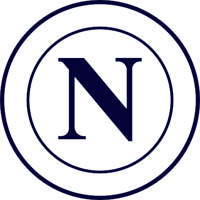

클럽 소개

SSC 나폴리(Società Sportiva Calcio Napoli)는 1926년에 창단된 이탈리아 남부의 대표적인 프로 축구 클럽입니다.
이 클럽은 아름다운 항구 도시 나폴리를 연고지로 하고 있으며, 이탈리아 세리에 A 리그에서 활약하고 있습니다.
SSC 나폴리는 팬들 사이에서 "Partenopei(파르테노페이)"라는 애칭으로 불리며, 강한 지역적 정체성과 열정적인 서포터로 유명합니다.
디에고 마라도나가 활약한 시절, 클럽은 1987년과 1990년 세리에 A 우승을 차지하며 전성기를 누렸습니다.
최근에는 리그 우승과 유럽 대항전 진출을 통해 다시 한번 명문 클럽으로서의 위상을 회복하고 있으며,
젊고 재능 있는 선수들을 중심으로 역동적인 축구를 펼치고 있습니다.